MAJIKAKO
빈티지의 온도로 입는,
한 벌뿐인 옷.
마지카코는 서울의 여성 빈티지 셀렉트숍입니다. 리본과 레이스, 낡은 듯 부드러운 소재, 지금은 다시 만들 수 없는 실루엣을 골라 룩으로 기록합니다.
인스타그램에서 전체 룩 보기@majikako_onna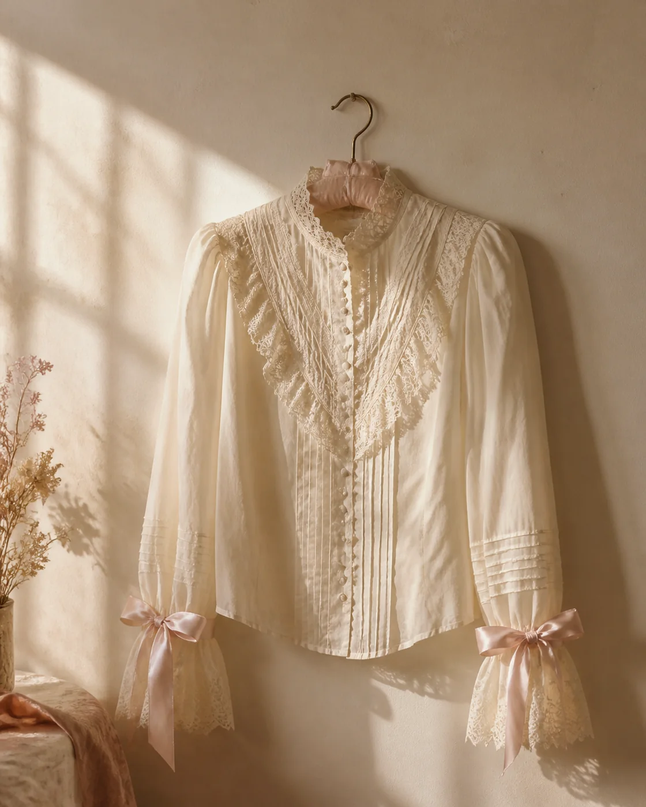
Vintage Select Shop — Seoul빈티지는 유행이 아니라
온도입니다.
옷은 기억을 입습니다.
누군가의 계절이 남긴
결을 골라 드립니다.
마지카코는 빈티지 셀렉트샵입니다. 많은 상품을 나열하는 빈티지 쇼핑몰 대신, 한 시즌에 고른 옷을 룩과 함께 기록합니다. 아이보리 레이스 블라우스, 크림 케이블 니트, 로즈 레이스 슬립, 퍼 칼라 페일 핑크 더플, 카멜 더플 코트 — 서로 다른 시대의 옷이 한 사람의 옷장에서 자연스럽게 이어지도록 큐레이션합니다.
여성 빈티지의 매력은 흠이 아니라 흔적에 있습니다. 조금 낡은 버튼, 한 번쯤 수선된 밑단, 세탁할수록 부드러워지는 면. 마지카코는 그 흔적을 감추지 않고, 오늘의 실루엣으로 다시 입을 수 있게 다듬습니다. 유니크 빈티지이기에 같은 옷은 두 번 나오지 않습니다.
룩북은 옷의 결을 따라 디테일 컷으로 기록합니다. 사진에서 본 옷의 결이 실제로 어떻게 흐르는지 확인할 수 있도록, 이 사이트는 브랜드의 무드보드로 남겨 둡니다. 새 룩과 입고 소식은 인스타그램 @majikako_onna에서 가장 먼저 공개됩니다.
- Vintage Select Shop
- 셀렉터의 취향으로 고른 소수의 빈티지 아이템을 룩과 함께 보여주는 편집숍. 마지카코가 지향하는 방식입니다.
- Women's Vintage
- 리본·레이스·퍼·아가일처럼 시대의 취향이 남은 여성 빈티지 아이템을 중심으로 큐레이션합니다.
- Vintage Lookbook
- 한 벌의 옷을 여러 각도와 디테일로 기록한 시즌 룩북. 마지카코는 시즌마다 무드 컷을 모아 무드보드로 남깁니다.
Winter 2026
Plate Archive
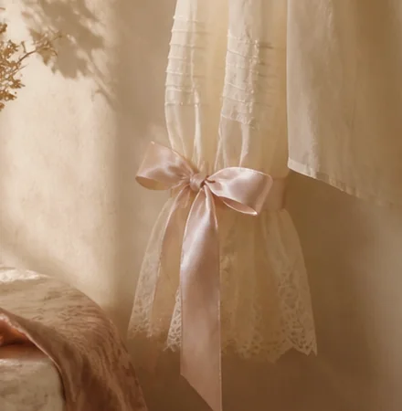
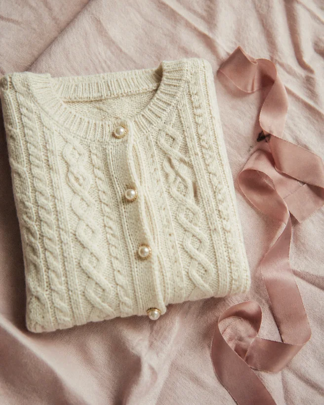
“새 옷이 아니라, 다시 입을 수 있는 시간을 고릅니다.”
MAJIKAKO — SELECTOR'S NOTE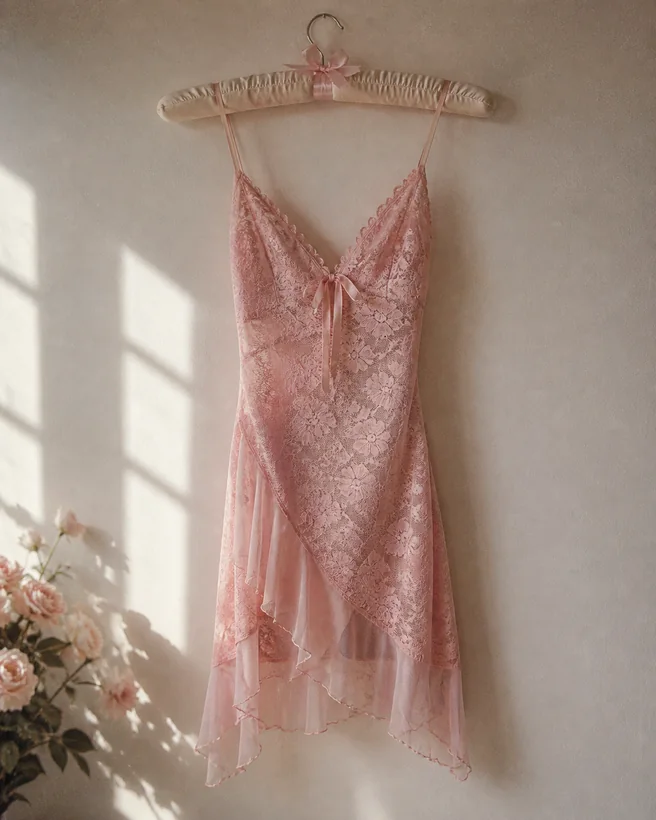
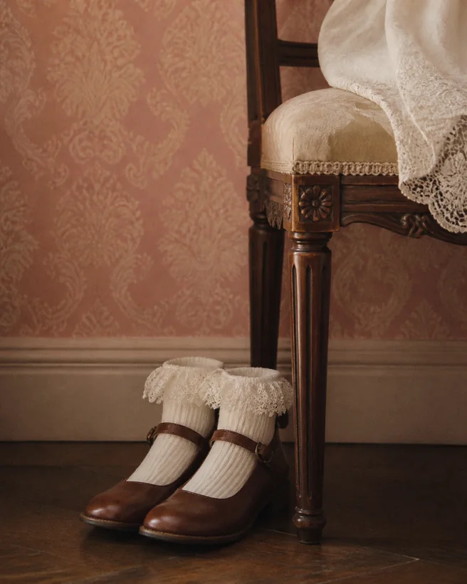
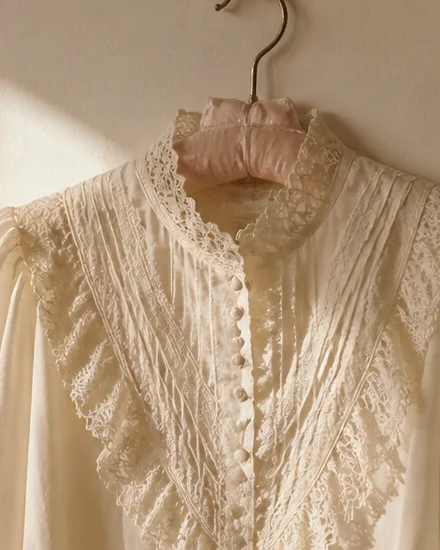
WINTER
- Ivory · Cream
- Soft Pink
- Fur Collar
- Camel · Brown
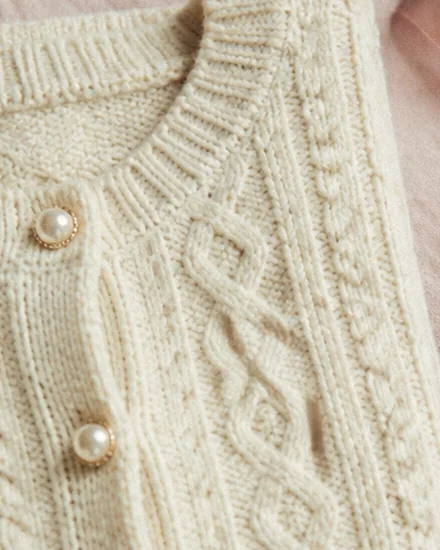
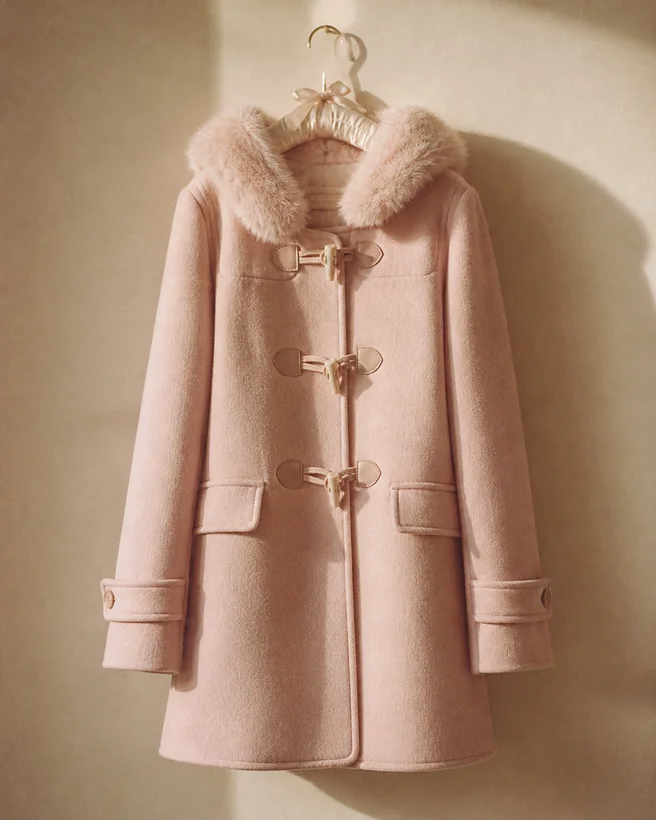
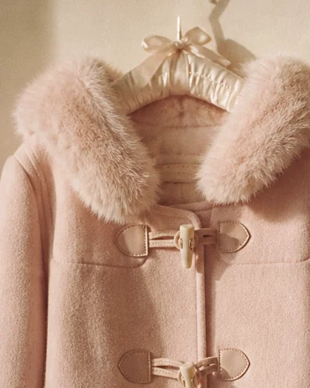
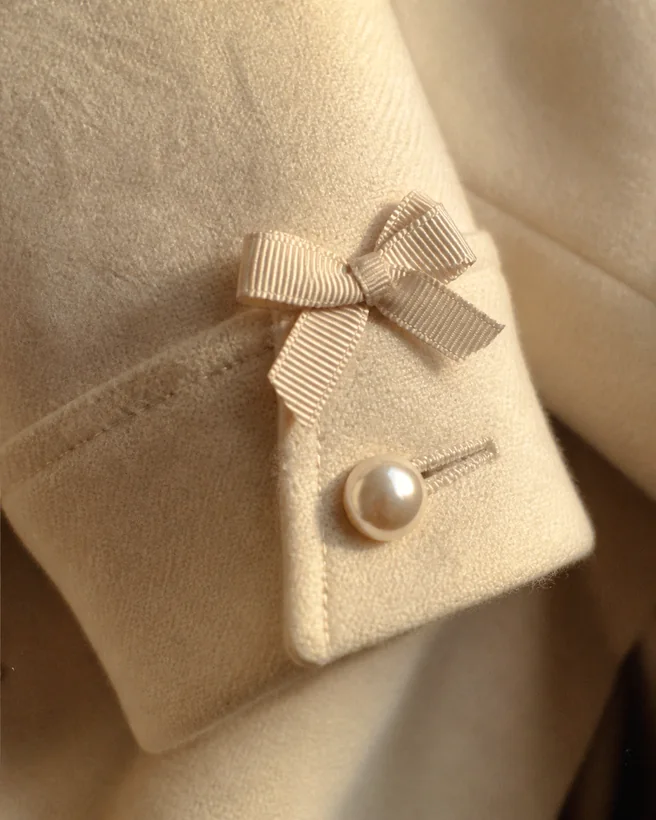
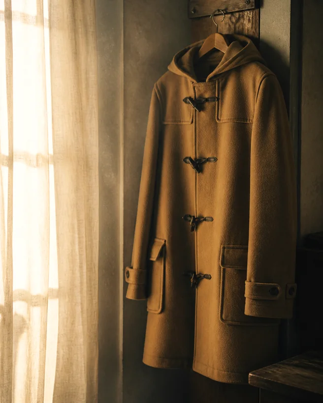
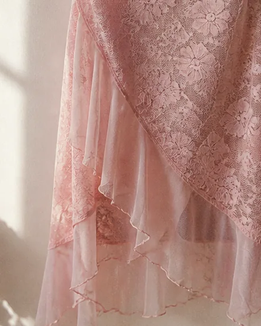
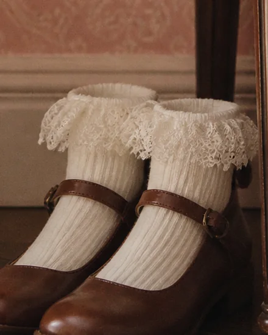
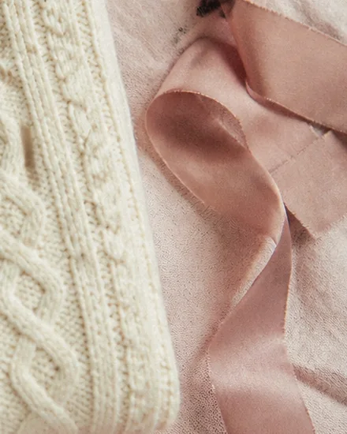
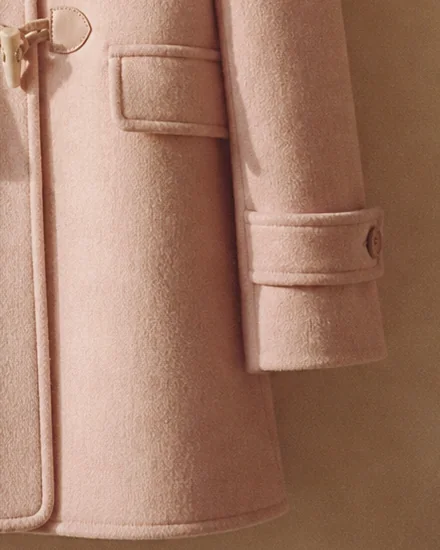
마지카코의 새 룩은
인스타그램에서 가장 먼저.
인스타그램에서 마지카코 보기Follow @majikako_onna
instagram.com/majikako_onna
모든 문의와 구매 상담은 DM으로
러블리와 코케트
그 사이의 옷장
마지카코(MAJIKAKO)는 서울에서 시작한 여성 빈티지 셀렉트숍입니다. 과하지 않은 리본, 부드러운 퍼, 빛을 담은 새틴처럼 손끝에서 결이 느껴지는 옷을 골라 소개합니다. 유행보다 오래 손이 가는 옷, 한 사람의 계절로 남는 옷을 좋아합니다.
이 사이트는 판매 페이지가 아니라 브랜드의 무드보드입니다. 시즌 룩북과 플레이트 아카이브, 셀렉터의 노트를 모아 두고, 실제 룩과 입고 소식은 인스타그램에서 이어집니다. 궁금한 옷이 있다면 언제든 DM으로 물어보세요.
— Majikako, curated in Seoul
- Brand
- 마지카코 · MAJIKAKO
- Type
- 여성 빈티지 셀렉트숍
- Base
- Seoul, Korea
- Channel
- @majikako_onna
- Since
- 2026 Winter